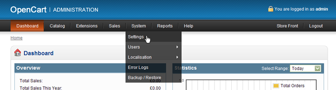
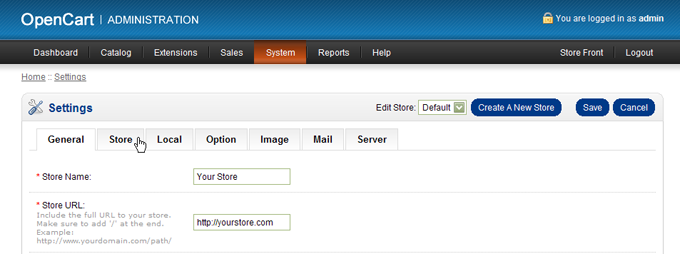
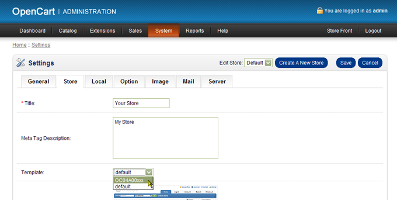
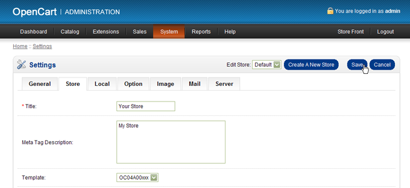
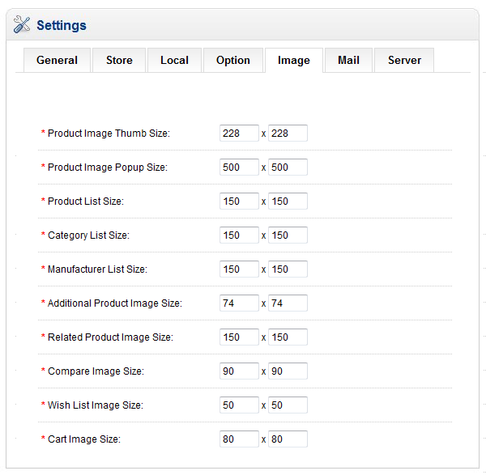
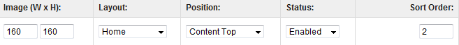

Created: 15/6/2011
Updated: 01/09/2012
By: ThemeGlobal
Site: ThemeGlobal.com - OpenCart Templates Club
Congratulations, you have just purchased BERSHKA OpenCart Theme. BERSHKA template is very simple to use and you will probably not even need to read through this guide. However, the following information will help you to get a better understanding of the many features of this template.
Recommended to use on clean install or existing shops without system core modifications! Please, read this section carefully before install!
Step 1 - Back up your existing files - top
Step 2 - Extract the template files from the archive - top
Extract tg_bershka_1.5.x_version_x.x.zip.
Step 3 – Install template file - top




The step-by-step instruction how to configures the template to look like the Demo Site
1.1 Login to your OpenCart admin. Please find a menu item called System on the top menu. Select the System menu then, click on Setting. Find your store and click on "Edit"
1.2 Adjust the image settings with the following values:

1.1 Login to your OpenCart admin. Please find a menu item called Extension on the top menu. Select the Extension menu then, click on Modules.
1.2 Find a module name TG Bershka CP click on Install. After install Edit button will show, click on it. Choose a default color and view for your site, then click Save Button.
3.1 Login to your OpenCart admin. Please find a menu item called Extension on the top menu. Select the Extension menu then, click on Modules.
3.2 Find a module name Featured click on Edit. Adjust the settings with the following values:

4.1 Login to your OpenCart admin. Please find a menu item called Extension on the top menu. Select the Extension menu then, click on Modules.
4.2 Find a module name Slideshow then Disable or Uninstall it.
4.3 Login to your OpenCart admin. Please find a menu item called Extension on the top menu. Select the Extension menu then, click on Modules.
4.4 Find a module name TG Bershka Slideshow Module then click on Install. After install Edit button will show, click on it. Change Status to Enable.
4.5 Set up General Setting by your needs. Or do nothing and use default setting.
4.6 Select Slider Image Manager tab. Add as many sliders as you want with link and title to each slide using banners image manage. Upload new one or choose bershka catalog from File Manager for demo slider. You can upload images of any size as well, but we recommend to use 940(w)x350(h) resolution.
5.1 Login to your OpenCart admin. Please find a menu item called Extension on the top menu. Select the Extension menu then, click on Modules.
5.2 Find a module name TG Payment Images then click on Install. After install Edit button will show, click on it. Change Status to Enable. You can upload images of any size as well, but we recommend to use 51x32 resolution. Images are uploaded the same way like you upload images in catalog - click on the "Missing image" thumbnail and upload new image or choose from File manager. Then click Save Button.